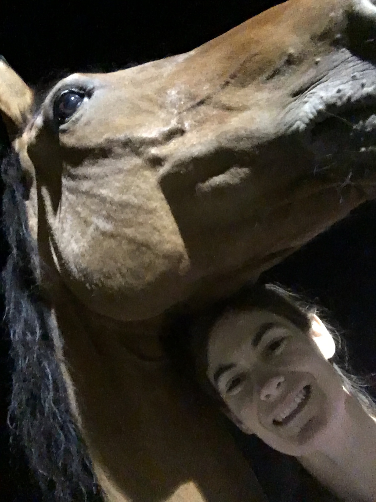

About Me
After graduating from UC Irvine with a B.S. in Information and Computer Science, I decided to pursue my passion for the equestrian sport of dressage. I have spent a few years riding and training horses, but now I am ready to start a career in the tech industry.
I applied to the UCI Coding Boot Camp in order to refresh my coding skills and get up-to-date on programming languages and tools for web and software development. The primary programming language that I have used is Java, and I have also used R and Python for basic data analysis.
When I'm not coding or practicing dressage (or "horse dancing," as Stephen Colbert would call it), I enjoy hanging out with my cat and watching TV. The Good Place is a current favorite. When I realize that I've been spending too much time in front of a screen, I like to go walking or running while keeping an eye out for wildlife like quail and roadrunners.